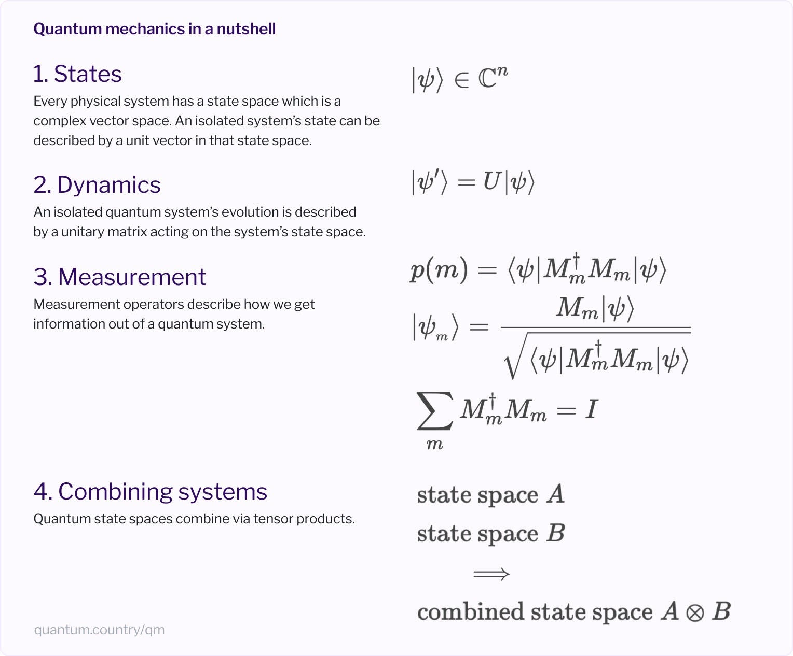

Nielsen's Quantum Country
Wednesday June 22, 2022
You can understand the force of gravity as proportional to one over distance squared without understanding why that should be, and this is the manner in which Nielsen explains quantum mechanics in his series of essays—and with considerable clarity.

I knew Nielsen first from his book Neural Networks and Deep Learning. I hadn't realized he was a quantum physicist first! His popular textbook with Chuang was published in 2001, and his YouTube series Quantum computing for the determined came out in 2010. So the 2019 Quantum Country was a return to the topic.
Matuschak is a co-author on the project, and my guess is he built the “mnemonic medium” it uses. There are flashcards. The implementation relies on an account mechanism that doesn't work very well. I love spaced repetition (1, 2) but I think the strength of the project is Nielsen's exposition.
A few takeaways in addition to the summary image above:
- Entanglement is key: Probabilities are not independent, which is
how you get the exponential capability of quantum computing with
more qubits. (See nutshell #4.)
- The usual entangled pair is just one where all the probability is on 00 and 11, with none on 01 or 10.
- Quantum search gives \( O(\sqrt{n}) \) general performance. (Shor's factoring is faster but not much covered in the text.)
- Quantum teleportation does not move information faster than the speed of light, because you have to send classical information as part of the procedure.
A few explicitly unresolved issues:
- How do we feel, after Bell inequality results, about not having local realism? (I would rather give up locality, I guess, but Nielsen suggests giving up realism. Trippy.)
- The interpretation problem: What does a quantum state even mean?
- The measurement problem: What does it even mean to measure a system?
The whole thing is great. Fun with linear algebra! Check it out!